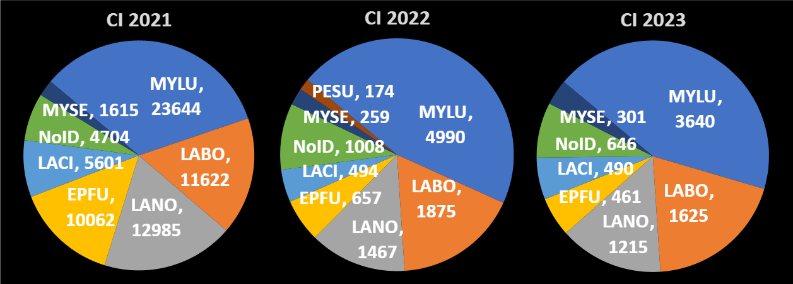
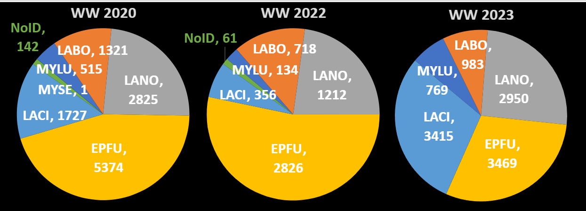
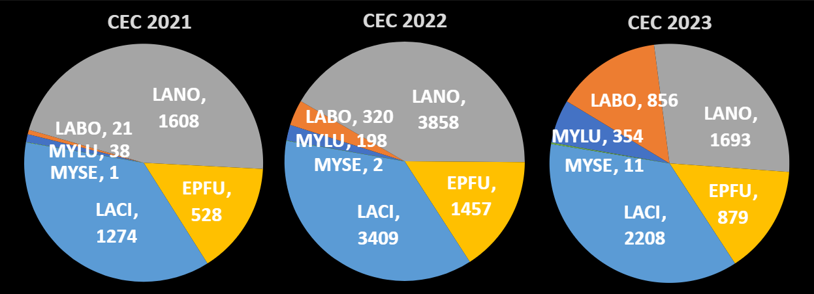

Abstract
82.2% of Wisconsin’s land is privately owned. Working with or researching on private land can be difficult as you have to obtain permission from the land owners. Building trust with landowners is a multiple year process that requires an ability to see a different perspective and a willingness to learn from both parties. With enough learning, comes an interest with how this land is being utilized. This interest can come in the form of aid from private organizations and continuous cooperation. For our project, we worked with three private organizations, the Catholic Ecology Center, the Marshfield Zoo, and a land owner on Chamber’s Island to collect 356,456 files of acoustic bat (Chiroptera) data that spans from 2017-2023. Working with private organizations allots us the opportunity to work with higher grade and regularly maintained equipment that we can’t consistently obtain from public organizations. Little brown bats (Myotis lucifugus, MYLU) are considered keystone species among other species of the insectivorous, evening bats (Vespertilionidae). The five other Wisconsin bats can eavesdrop on the frequencies emitted by MYLU as a way to identify where insects are, as MYLUs are the lowest fliers. The recent drop in bat population numbers, due to the fungal disease white-nose syndrome and collisions with windmills, can be seen across the state with the MYLUs and Northern long-eared bats (Myotis septentrionalis) being the most impacted. It is important to find out presences and absences of these bats to assess proper land management and what areas to further research.
Scientific Poster

Key Findings
- Highest bat call volume was recorded at a landowner's house on Chamber's Island, a remote island in Green Bay, with high little brown and northern long-eared bat activity.
- Various bat species including little brown batswere showing rebound activity from previous low years in the Wildwood Zoo property, which is located in Central Wisconsin. This could indicate a potential rebound from white-nose syndrome in the area.
- Migrating bats dominated the Catholic Ecology Cetner property, which is located in the Southern part of the state. Hibernating bats also showed rebound activity from 2021-2023.
- Prioritizing long-term monitoring on private lands and establishing more monitoring stations across the state can tell us more about WNS recovery and bat population trends. Our data shows the highest frequency of hibernating bat calls at Chambers Island. This data is crucial to future land use decisions in the area, especially with newly found interest in logging efforts in the area.
Selected Figures
{kind=link}

{kind=link}

{kind=link}

Methodology
We worked with three private organizations to collect acoustic bat data from 2017-2023 via acoustic bat detectors. The calls were synthesized and analyzed using Kaleidoscope Pro software to identify the species of bats present. We used Microsoft Excel to create pivot tables to summarize the data and visualize the results. We then created pie charts as well as a column chart to visualize the data.